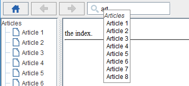
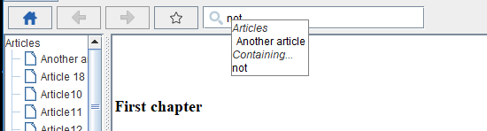
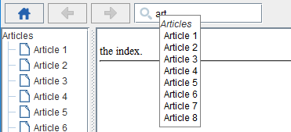
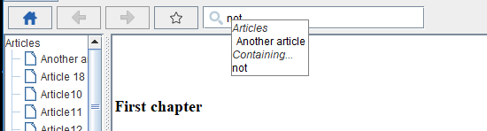

Help search
It is possible to show an auto-complete Search box at the top of the articles in the help GUI.


Search options
There are the same options for the help search box, as there are for the website search box:- By default the Search box allow to search for the articles titles and their table of content sub-titles
- There can be a Search box for the articles titles only
- Or there can be no Search box

Full text search
Additionnally, depending on the value of the fullTextSearch property, the help search box can also include a full text search option.
See Also
- Search: This article is about the Search box wich is shown on articles
×

Categories: javahelp